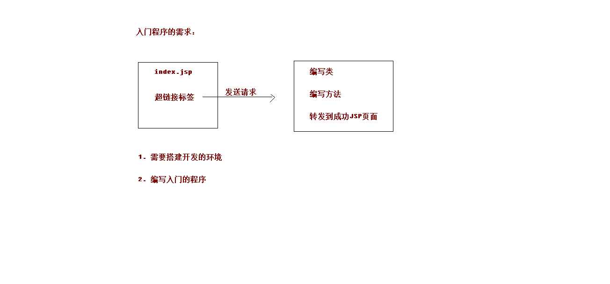
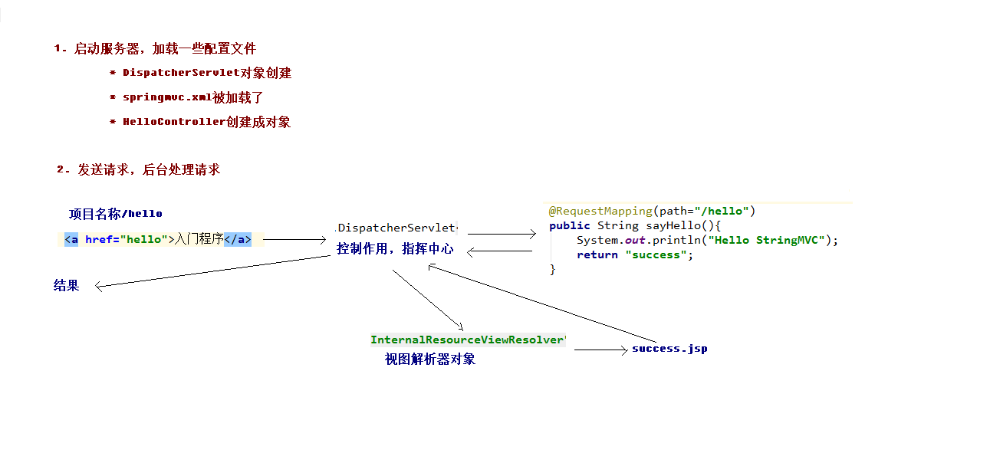

springMVC的入门
三层架构介绍和MCN设计模型介绍
三层架构
- 咱们开发服务器端程序，一般都基于两种形式，一种C/S架构程序，一种B/S架构程序
- 使用Java语言基本上都是开发B/S架构的程序，B/S架构又分成了三层架构
- 三层架构
- 表现层：WEB层，用来和客户端进行数据交互的。表现层一般会采用MVC的设计模型
- 业务层：处理公司具体的业务逻辑的
- 持久层：用来操作数据库的
MVC模型
- MVC全名是Model View Controller 模型视图控制器，每个部分各司其职。
- Model：数据模型，JavaBean的类，用来进行数据封装。
- View：指JSP、HTML用来展示数据给用户
- Controller：用来接收用户的请求，整个流程的控制器。用来进行数据校验等。

SpringMVC框架的介绍
SpringMVC 是一种基于 Java 的实现 MVC 设计模型的请求驱动类型的轻量级 Web 框架，属于 Spring FrameWork 的后续产品，已经融合在 Spring Web Flow 里面。Spring 框架提供了构建 Web 应用程序的全功 能 MVC 模块。使用 Spring 可插入的 MVC 架构，从而在使用 Spring 进行 WEB 开发时，可以选择使用 Spring 的 Spring MVC 框架或集成其他 MVC 开发框架，如 Struts1(现在一般不用)，Struts2 等。 SpringMVC 已经成为目前最主流的 MVC 框架之一，并且随着 Spring3.0 的发布，全面超越 Struts2，成 为最优秀的 MVC 框架。 它通过一套注解，让一个简单的 Java 类成为处理请求的控制器，而无须实现任何接口。同时它还支持 RESTful 编程风格的请求。
入门程序

- 创建WEB工程，引入开发的jar包
- 具体的坐标如下
1 | <!-- 版本锁定 --> |
- 配置核心的控制器（配置DispatcherServlet）
- 在web.xml配置文件中核心控制器DispatcherServlet
1 | <!-- SpringMVC的核心控制器 --> |
- 编写springmvc.xml的配置文件
1 | <?xml version="1.0" encoding="UTF-8"?> |
- 编写index.jsp和HelloController控制器类
- index.jsp
1 | <body> |
- HelloController
1 | package cn.itcast.controller; |
在WEB-INF目录下创建pages文件夹，编写success.jsp的成功页面
<body> <h3>入门成功！！</h3> </body>- 启动Tomcat服务器，进行测试
入门案例的执行过程分析
- 入门案例的执行流程
- 当启动Tomcat服务器的时候，因为配置了load-on-startup标签，所以会创建DispatcherServlet对象，就会加载springmvc.xml配置文件
- 开启了注解扫描，那么HelloController对象就会被创建
- 从index.jsp发送请求，请求会先到达DispatcherServlet核心控制器，根据配置@RequestMapping注解找到执行的具体方法
- 根据执行方法的返回值，再根据配置的视图解析器，去指定的目录下查找指定名称的JSP文件
- Tomcat服务器渲染页面，做出响应
- SpringMVC官方提供图形
- 入门案例中的组件分析
- 前端控制器（DispatcherServlet）
- 处理器映射器（HandlerMapping）
- 处理器（Handler）
- 处理器适配器（HandlAdapter）
- 视图解析器（View Resolver）
- 视图（View）

RequestMapping注释的作用
- RequestMapping注解的作用是建立请求URL和处理方法之间的对应关系
- RequestMapping注解可以作用在方法和类上
- 作用在类上：第一级的访问目录
- 作用在方法上：第二级的访问目录
- 细节：路径可以不编写 / 表示应用的根目录开始
- 细节：${ pageContext.request.contextPath }也可以省略不写，但是路径上不能写 /
RequestMapping注释的属性
- path 指定请求路径的url
- value value属性和path属性是一样的
- mthod 指定该方法的请求方式
- params 指定限制请求参数的条件
- headers 发送的请求中必须包含的请求头
请求参数绑定
- 请求参数的绑定说明
- 绑定机制
- 表单提交的数据都是k=v格式的 username=haha&password=123
- SpringMVC的参数绑定过程是把表单提交的请求参数，作为控制器中方法的参数进行绑定的
- 要求：提交表单的name和参数的名称是相同的
- 支持的数据类型
- 基本数据类型和字符串类型
- 实体类型（JavaBean）
- 集合数据类型（List、map集合等）
- 绑定机制
- 基本数据类型和字符串类型
- 提交表单的name和参数的名称是相同的
- 区分大小写
- 实体类型（JavaBean）
- 提交表单的name和JavaBean中的属性名称需要一致
- 如果一个JavaBean类中包含其他的引用类型，那么表单的name属性需要编写成：对象.属性 例如：address.name
配置解决中文乱码的过滤器
- 在web.xml中配置Spring提供的过滤器类
1 | <!-- 配置过滤器，解决中文乱码的问题 --> |
请求参数绑定集合类型
- JSP页面编写方式：list[0].属性
- JSP页面编写方式：map[‘one’].属性
1 | <form action="param/saveAccount" method="post"> |
自定义类型转换器演示异常
- 表单提交的任何数据类型全部都是字符串类型，但是后台定义Integer类型，数据也可以封装上，说明Spring框架内部会默认进行数据类型转换。
如果想自定义数据类型转换，可以实现Converter的接口
自定义类型转换器
1
2
3
4
5
6
7
8
9
10
11
12
13
14
15
16
17
18
19
20
21
22
23
24
25
26
27
28
29
30
31
32
33package cn.itcast.utils;
import java.text.DateFormat;
import java.text.SimpleDateFormat;
import java.util.Date;
import org.springframework.core.convert.converter.Converter;
/**
* 把字符串转换成日期的转换器
* @author rt
*/
public class StringToDateConverter implements Converter<String, Date>{
/**
* 进行类型转换的方法
*/
public Date convert(String source) {
// 判断
if(source == null) {
throw new RuntimeException("参数不能为空");
}
try {
DateFormat df = new SimpleDateFormat("yyyy-MM-dd");
// 解析字符串
Date date = df.parse(source);
return date;
} catch (Exception e) {
throw new RuntimeException("类型转换错误");
}
}
}注册自定义类型转换器，在springmvc.xml配置文件中编写配置
1
2
3
4
5
6
7
8
9
10
11<!-- 注册自定义类型转换器 -->
<bean id="conversionService" class="org.springframework.context.support.ConversionServiceFactoryBean">
<property name="converters">
<set>
<bean class="cn.itcast.utils.StringToDateConverter"/>
</set>
</property>
</bean>
<!-- 开启Spring对MVC注解的支持 -->
<mvc:annotation-driven conversion-service="conversionService"/>
获取Servlet原生的API
- 只需要在控制器的方法参数定义HttpServletRequest和HttpServletResponse对象
RequsetParam注解
- 作用：把请求中的指定名称的参数传递给控制器中的形参赋值
- 属性
- value：请求参数中的名称
- required：请求参数中是否必须提供此参数，默认值是true，必须提供
- 代码如下
1 | /** |
RequestBody注解
- 作用：用于获取请求体的内容（注意：get方法不可以）
- 属性
- required：是否必须有请求体，默认值是true
- 代码如下
- 属性
1 | /** |
PathVariable注解
- 作用：拥有绑定url中的占位符的。例如：url中有/delete/{id}，{id}就是占位符
- 属性
- value：指定url中的占位符名称
- Restful风格的URL
- 请求路径一样，可以根据不同的请求方式去执行后台的不同方法
- restful风格的URL优点
- 结构清晰
- 符合标准
- 易于理解
- 扩展方便
- 代码如下
- 属性
1 | <a href="user/hello/1">入门案例</a> |
HiddenHttpMethodFilter过滤器
RequestHeader注解
- 作用：获取指定请求头的值
- 属性
- value：请求头的名称
- 代码如下
- 属性
1 | @RequestMapping(path="/hello") |
CookieValue注解
- 作用：用于获取指定cookie的名称的值
- 属性
- value：cookie的名称
- 代码
- 属性
1 | @RequestMapping(path="/hello") |
ModelAttribute注解
- 作用
- 出现在方法上：表示当前方法会在控制器方法执行前线执行。
- 出现在参数上：获取指定的数据给参数赋值。
- 应用场景
- 当提交表单数据不是完整的实体数据时，保证没有提交的字段使用数据库原来的数据。
- 具体的代码
- 修饰的方法有返回值
1 | /** |
- 修饰的方法没有返回值
1 | /** |
SessionAttributes注解
- 作用：用于多次执行控制器方法间的参数共享
- 属性
- value：指定存入属性的名称
- 代码如下
1 | @Controller |